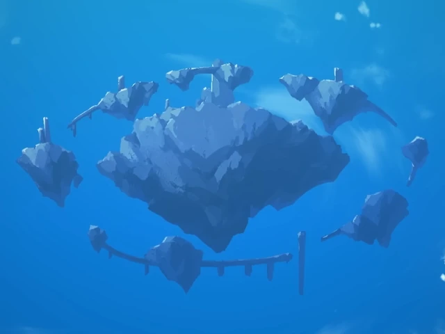

Teyvat & Unknown · Geography & Locations
Celestia
Celestia is the floating realm seen above Teyvat and the seat of a divine order. Quests connect it to the Archons, the Four Shades, and the Heavenly Principles’ periodic monitoring.

Overview
Spoilers through the Archon Quest chapter A Rekviem for the Underworld. Celestia is the floating island or realm seen in the sky above Teyvat. The name is also used in discussion of the divine authority above the nations, but the story has not provided a complete map or a single formal definition that settles every use of the term.
What people in Teyvat believe about Celestia, what ancient texts preserve, and what the Traveler learns in current quests are different kinds of evidence. A legend about ascension can establish a culture's belief without proving every detail of the afterlife; a quest revelation can confirm a present event without explaining the entire celestial system. This entry keeps those layers distinct.
Appearance and Place in the Sky
From the ground, Celestia appears as a distant complex of floating landmasses. The visible model has a large central mass, smaller outlying formations, connecting arches, and pale monumental buildings. Its upper surfaces look fertile, while the undersides are rugged. The scale, distance, and changing camera angle make a precise measurement difficult.
The sky image was changed from a flat representation to a three-dimensional model in Version 3.0. This is a rendering change, not evidence that the island physically moved. Celestia has chiefly appeared as a distant landmark rather than a place the Traveler can freely explore, so map positions inferred from a viewpoint should be treated as approximations.
Celestia in Teyvat's Legends
Many people describe Celestia as the home of gods and the destination of exceptional mortals who ascend. Mondstadt's tradition remembers Vennessa as a hero chosen by the gods after helping free the city from the Lawrence Clan. The great oak at Windrise marks the place associated with her ascent. The story is also told in the Prologue manga and is discussed by local characters.
In the Prologue Archon Quest, Venti calls Vision bearers allogenes and explains that they may have the potential to ascend. That establishes an in-world possibility, not a guarantee that every Vision bearer will reach Celestia, become a god, or remain there. Other regions preserve their own accounts of ascension, adepti, and the divine, and these accounts do not always describe the same process.
The Seven and the Gnoses
The Archon War ended with seven victorious gods occupying the divine seats associated with the Seven. Each Archon received a Gnosis, an object that can resonate directly with Celestia. Venti explains this connection in the closing part of the Prologue Archon Quest. A Gnosis therefore links an Archon to the celestial order, but its existence alone does not explain the full chain of command or every source of an Archon's power.
Over time, the original holders and the Gnoses changed. The Fatui's campaign to collect the Gnoses made them a focus of conflict between Snezhnaya and the other nations. In the latest Archon Quest, the Tsaritsa is described as holding six Gnoses and using their power as part of her plan. This is evidence of a challenge to Celestia's order; it does not establish that the Tsaritsa already rules Celestia.
The Heavenly Principles and the Four Shades
The Heavenly Principles is the divine authority most closely associated with Celestia in the present story. The name can refer to the ruler, the order it maintains, or the laws attributed to it, so a passage should be read in its own context. The game has not supplied a complete account of how the celestial administration is organized.
The Four Shades are beings connected to this authority. HoYoverse's Teyvat Chapter Interlude Teaser names Istaroth as the Ruler of Time, Ronova as the Ruler of Death, and Naberius as the Ruler of Life. The teaser and later quests establish that they have powers and duties within the world's divine order. The remaining identity and the complete division of roles are not established by those three names; the Sustainer should not be assigned to an unnamed position as if that identification were confirmed.
Early History in Before Sun and Moon
The book Before Sun and Moon, preserved in Enkanomiya as part of The Byakuyakoku Collection, is one of the oldest surviving accounts of the divine order. Its narrator describes the arrival of the Primordial One, a conflict with the dragon Sovereigns, the creation of four Shades, and the shaping of a human world. It also recounts the arrival of a Second Who Came and a later war between the two heavenly thrones.
The book is essential evidence, but it is still an in-world historical text with a narrator and a limited point of view. Its author says the Primordial One may have been Phanes; that wording does not make the identification certain by itself. Later quests add context, yet the complete chronology and the exact relationship between the Primordial One, the Heavenly Principles, and the visible island remain subjects the story has not fully resolved.
Angels and Earlier Envoys
Several older records and later story references describe angels as beings associated with Celestia and as envoys who once dealt with human civilizations. They belong to the history of the ancient world, but the available material does not provide a complete roster, a reliable account of every angel's fate, or a full description of their present organization. Angels, Seelies, gods, and the Four Shades should not be collapsed into one category merely because their histories intersect.
Known Residents and Associated Beings
The Heavenly Principles and the Four Shades are the strongest named connections to Celestia in the current story. Older records place angels there as envoys during an earlier age, while Teyvat's legends say that exceptional mortals can ascend. Vennessa is the best-known example, but her ascent is presented through Mondstadt's history and tradition rather than a current view of her life on the island.
The game has not shown a complete, reliable census of Celestia's present inhabitants. Claims about who lives there now, which Shade occupies a particular seat, or whether every ascended mortal remains there need to be labeled as uncertain unless a quest or source states them directly.
Celestial Nails and Ancient Civilizations
Celestial Nails appear in the histories and ruins of several places, including Dragonspine and the Chasm. Their arrival is associated with immense environmental change, and some records connect them to the response to threats that affected Teyvat's ancient order. The accounts are not identical in every location, so a single explanation should not be applied to every Nail.
The Skyfrost Nail is central to the destruction of Sal Vindagnyr, while the Chasm's Nail is connected to the history of the underground. Other regional records add further context. These examples show that Celestia's interventions could devastate settled lands; they do not by themselves prove that every civilization was destroyed for the same reason or that the Nails were simply instruments of punishment.
Slumber and the Monitoring Cycle
Sumeru's Archon Quest established that the Heavenly Principles had been dormant for centuries. Later revelations refine what dormancy means: it does not mean that every celestial mechanism has stopped or that the authority above Teyvat has become unreachable.
In the Chapter VII story A Rekviem for the Underworld, Ronova says that during this period of slumber Celestia monitors activity periodically. The same chapter shows the consequences. After the Tsaritsa exploits the interval around a resurrection and changes the flow of time, Celestia detects the incident, issues a directive to Rhinedottir, and reclaims Ronova's Authority of Death. This is the clearest current evidence that the monitoring cycle is real and that Celestia can still respond while the Heavenly Principles sleeps.
The story does not give the cycle's duration, explain every trigger, or show that Celestia watches every event continuously. It also does not make the Heavenly Principles' slumber equivalent to total silence. Those limits matter: the current evidence supports periodic oversight and a response to this particular incident, not a complete technical description of the system.
Places and Depictions Connected to Celestia
Celestia is linked to several locations through records rather than ordinary travel. A mural in the Mural Room beneath Dragonspine depicts a floating island above the Skyfrost Nail. A cave on Tsurumi Island contains another depiction. Windrise is tied to Vennessa's legendary ascent, and Enkanomiya preserves the book Before Sun and Moon, an important but old account of the world's earliest divine history.
The base of Mondstadt's Anemo Archon Statue bears the words Gateway to Celestia in the common script. Venti's voice-over about Celestia also jokes that its water and fruit are poor; this is a character's remark, not a verified travel report. These details add texture to local ideas about the island, but a mural, inscription, or joke should not be mistaken for a complete map.
These depictions are valuable evidence of how people recorded the heavens, but each has its own point of view. Compare them with later quests and item descriptions before using them to make a definite claim about Celestia's geography or chronology.
What Is Established and What Remains Open
The story establishes that a floating island is visible above Teyvat; that many inhabitants associate Celestia with gods and ascension; that the Archons' Gnoses resonate with it; that the Four Shades and angels are connected to the wider celestial history; and that Celestia periodically monitors activity while the Heavenly Principles is dormant. The latest Archon Quest also demonstrates a direct response to a breach involving Ronova's authority.
The complete layout and population of Celestia, the identity and duties of every Shade, the full history of the angels, the exact meaning of every ancient mural, and the long-term purpose of the monitoring system remain open. Claims that Celestia is simply a benevolent paradise, a purely hostile prison, or a machine that destroys every advanced civilization go beyond what these sources establish. New quests may answer some of these questions.
This is an original CoreGG reading guide, not an official HoYoverse article or a reproduction of the game text. Source links below identify the records used so you can check the original context.
Sources & references
Check these sources for the original game text and reference trail.